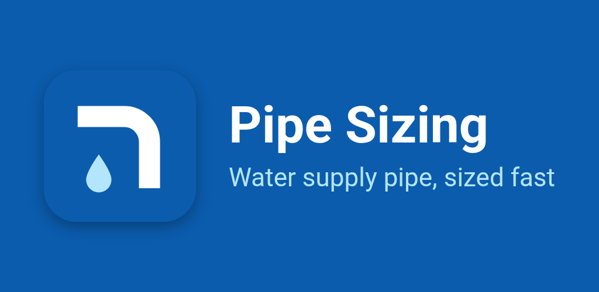
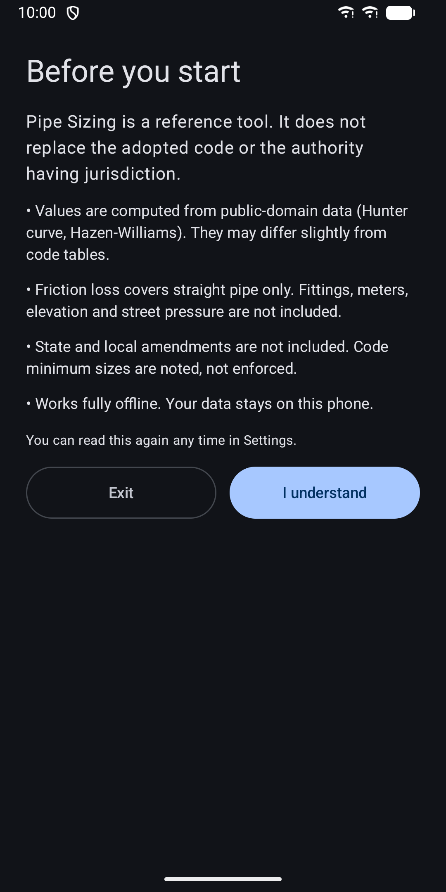
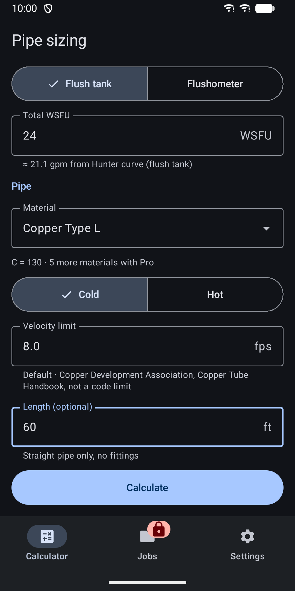
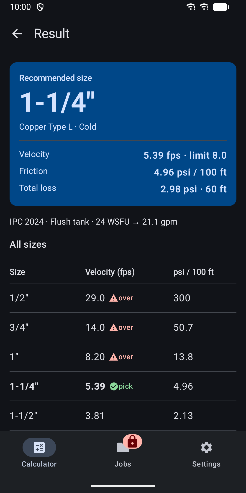
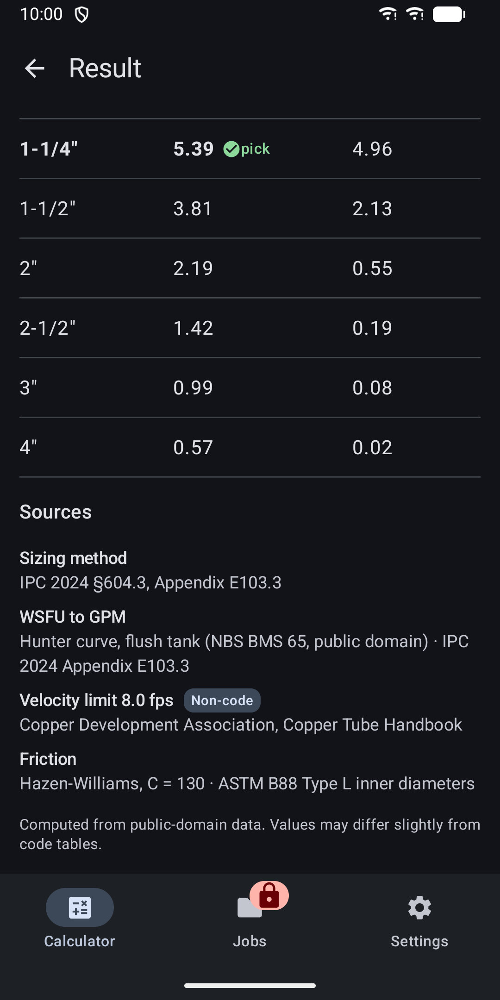
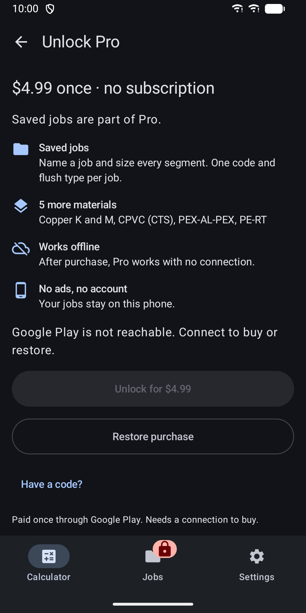
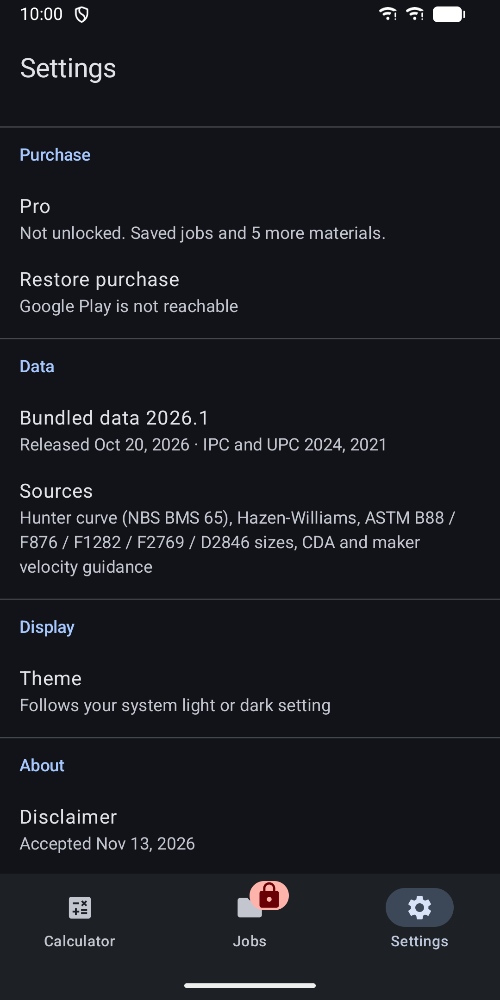

Pipe Sizing: IPC & UPC Water
Size water supply pipe from WSFU or GPM with velocity and friction loss







About
Pipe Sizing sizes water supply pipe segments. Enter total water supply fixture units (WSFU) or gallons per minute (GPM), pick a material, and get the recommended size with velocity and friction loss. It works without a connection, has no account and runs on phones and tablets. Made for US plumbers, apprentices, estimators and people studying for the plumbing exam. Units are US units. The app is in English. WHAT IT DOES - Recommends the smallest pipe from 1/2 inch to 4 inch that stays within the velocity limit. - Shows velocity in feet per second and friction loss in psi per 100 ft for every size, in one compact table. - Shows total friction loss for a straight run when you enter a length. - Supports IPC and UPC, 2024 and 2021 editions, and shows the section numbers behind each result. - Converts WSFU to GPM with the public-domain Hunter curve, for flush tank or flushometer systems. - Uses Hazen-Williams with design C values and published inner pipe diameters. - Sets default velocity limits from the code, or from manufacturer guidance where the code gives none. Guidance is clearly marked as non-code. You can change the limit and reset it to the default. - Switches the default limit between cold and hot water. - Adds a note when the recommended size is below a code minimum, such as a 3/4 inch water service. - Shows your last calculation in a home-screen widget. INCLUDED WITHOUT PURCHASE - Single-segment calculator. - Copper Type L and PEX. - Your last result is kept and shown in the widget. PRO, A ONE-TIME IN-APP PURCHASE - Saved jobs: name a job, set the code, edition and flush type once, then size every segment with its own material, temperature and velocity limit. Friction loss is shown per segment. There is no job total. - Five more materials: copper Type K and M, CPVC (CTS), PEX-AL-PEX and PE-RT. - After purchase, Pro works without a connection. You can restore the purchase on the Unlock screen. PRIVACY - No account and no analytics. - Your last result and saved jobs stay on your device. - Cloud backup is turned off. - The app does not request the internet permission. Only Google Play handles the purchase. ACCESSIBILITY - Light and dark theme that follows your system setting. - Screen reader labels, sizes spoken in words, and large touch targets. IMPORTANT Values are computed from public-domain data and may differ slightly from printed code tables. The app is a reference tool. It does not replace the adopted code or the authority having jurisdiction. Fittings, meters, elevation, street pressure and state or local amendments are not included. Code minimum sizes are noted, not enforced.